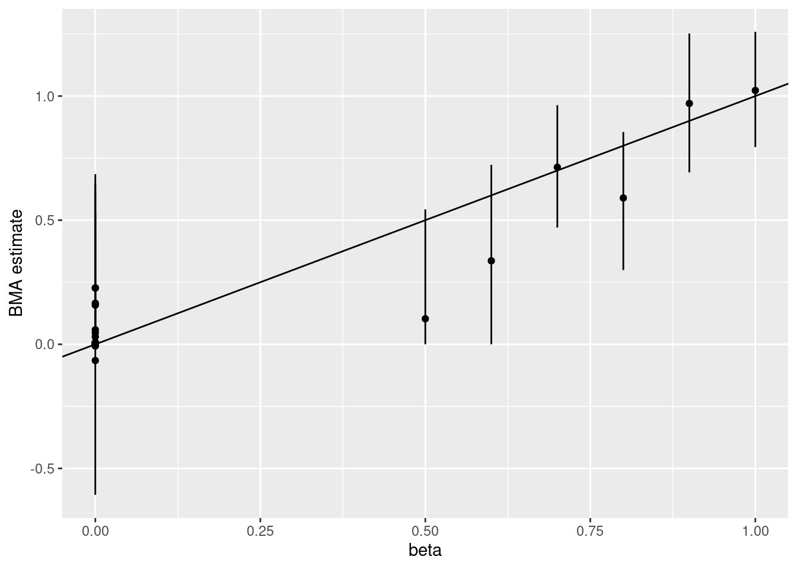
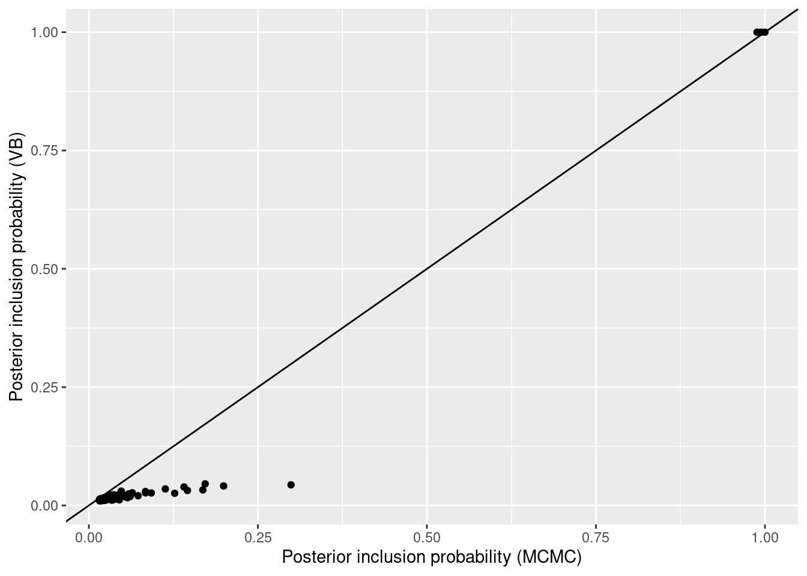
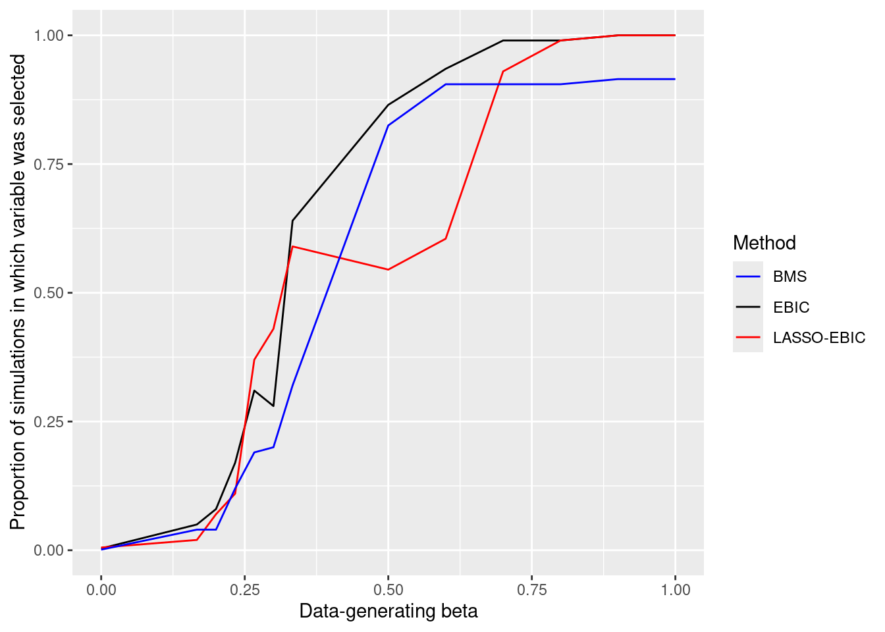
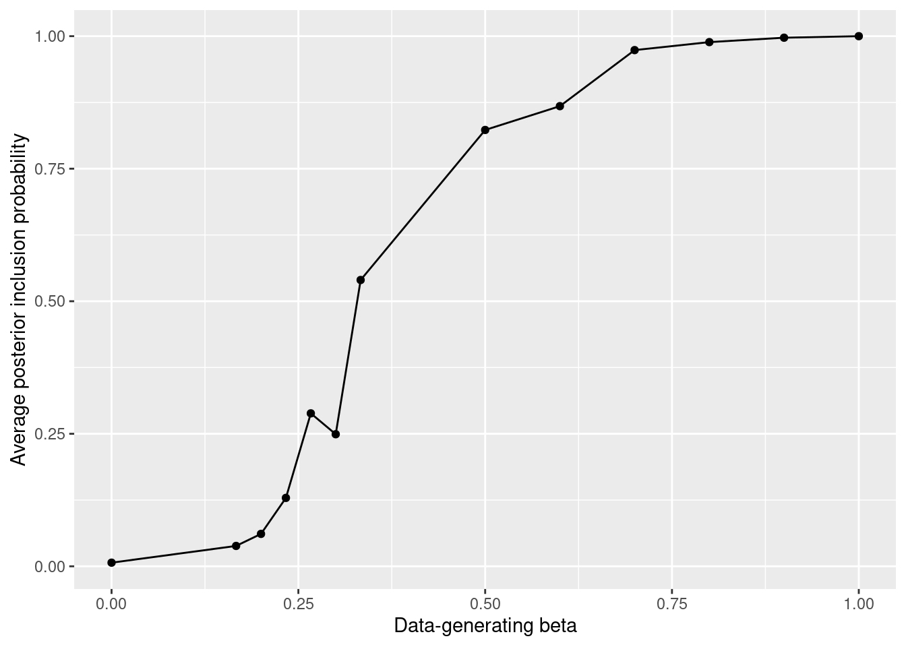
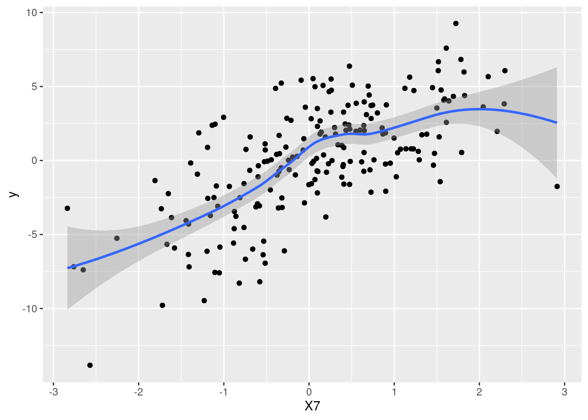
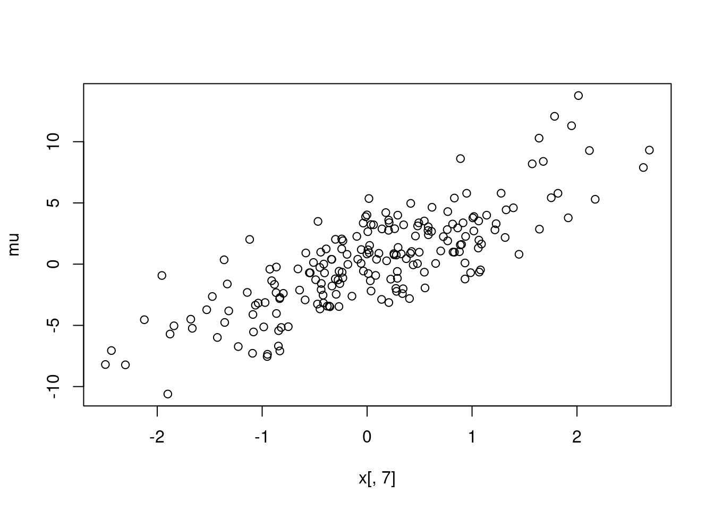

1 Quick start
Before properly discussing high-dimensional model selection methods, we show some examples to motivate their utility and to provide a quick start for readers who are already familiar with the basics. The examples also illustrate potential pitfalls that are not always sufficiently appreciated.
We focus on sparse inference methods, mainly Bayesian model selection (BMS) and averaging (BMA), L0 criteria like the BIC or EBIC, L1 (LASSO) and adaptive LASSO.
For the illustrations we use R package modelSelection.
The main functions for regression-type models are modelSelection and bestBIC (along with companions like bestEBIC, bestAIC and bestIC).
modelSelection_eBayes provides an empirical Bayes counterpart to modelSelection.
1.1 Popular methods may fail
We consider a simple setting with \(p=3\) covariates and a moderately large sample size \(n=200\), where popular high-dimensional methods fail to recover the truly active covariates. It may feel underwhelming to start a book on high-dimensional model selection with a \(p=3\) example: the message is that if things can go wrong here, they are bound to get worse for larger \(p\). By understanding what can go wrong in such a manageable example, the hope is that we learn lessons that can be valuable in harder ones, and we better understand what different methods can bring to the table.
Suppose that data are truly generated as follows: \[\begin{align*} x_{i1} & \sim N(0,1) \\ x_{i2} & \sim N(0,1) \\ x_{i3} & \sim N(x_{i1} - x_{i2}, \sigma=0.2) \\ y_i & \sim N(x_{i1} - x_{i2}, \sigma=0.5) \end{align*}\] with independence across \(i=1,\ldots,n\). That is, \(y_i\) truly depends on \(x_{i1}\) and \(x_{i2}\) but not on \(x_{i3}\). The complicating issue is that \(x_{i3}\) is a near-copy of the mean of \(y_i\), and hence the marginal correlation between \(x_{i3}\) and \(y_i\) is high.
Code
To show that this is actually an easy exercise, we fit via least-squares the model that includes all covariates. The results correctly suggest that the third covariate could be conceivably dropped, whereas covariates 1-2 are highly statistically significant.
##
## Call:
## lm(formula = y ~ -1 + ., data = df)
##
## Residuals:
## Min 1Q Median 3Q Max
## -2.83454 -0.64344 -0.05624 0.60601 2.49699
##
## Coefficients:
## Estimate Std. Error t value Pr(>|t|)
## x1 1.13570 0.33100 3.431 0.000732 ***
## x2 -1.05736 0.33124 -3.192 0.001644 **
## x3 -0.02529 0.32816 -0.077 0.938637
## ---
## Signif. codes: 0 '***' 0.001 '**' 0.01 '*' 0.05 '.' 0.1 ' ' 1
##
## Residual standard error: 0.9501 on 197 degrees of freedom
## Multiple R-squared: 0.705, Adjusted R-squared: 0.7005
## F-statistic: 156.9 on 3 and 197 DF, p-value: < 2.2e-16The issue is that when the number of covariates \(p\) is large, possibly larger than the sample size \(n\), fitting a model that includes all parameters is often less reliable (the parameter estimates are less precise). High-dimensional methods use other strategies to identify the truly active covariates. A popular strategy is the LASSO (or \(L_1\) regularization) of (Tibshirani 1996), which can quickly obtain parameter estimates for all values of its regularization (or penalty) hyper-parameter. As one increases the penalty, the LASSO solution moves from the model excluding all covariates to first including \(x_{i3}\) (the variable most correlated with \(y_i\)), and subsequently to adding \(x_{i1}\) and \(x_{i2}\), without ever dropping \(x_{i3}\). That is, the data-generating model is not recovered by any value of the penalization parameter.
Code
## (Intercept) x1 x2 x3
## s0 FALSE FALSE FALSE FALSE
## s1 FALSE FALSE FALSE TRUE
## s22 FALSE TRUE FALSE TRUE
## s34 FALSE TRUE TRUE TRUEIn contrast, the Bayesian information criterion (BIC) of Schwarz (1978) (see Section 4.1), correctly identifies the data-generating model.
bestBIC enumerates all \(2^3=8\) models resulting from the inclusion/exclusion of the 3 covariates, and finds the model with best (lowest) BIC.
We use the R formula y ~ -1 + . to consider all variables in the data (other than y) as covariates,
and set -1 to exclude the intercept, since it’s not needed in this example).
We set verbose=FALSE to avoid printing progress information and cluttering the book.
In cases where \(p\) is large, bestBIC uses MCMC to explore the model space.
A computationally faster alternative is to use heuristics, for example finding the model with best BIC among those visited in the LASSO or adaptive LASSO path (Zou (2006)), using a coordinate descent algorithm or local combinatorial searches (Hazimeh, Mazumder, and Nonet (2023), R package L0Learn), see Section 4.
Function bestBIC_fast in modelSelection implements such heuristics.
## icfit object
##
## Model with best BIC : x1 x2
##
## Use summary(), coef() and predict() to get inference for the top model
## Use coef(object$msfit) and predict(object$msfit) to get BMA estimates and predictionsFitting the selected model via least-squares shows that both covariates are highly statistically significant.
##
## Call:
## glm(formula = f, family = family2glm(ms$family), data = data)
##
## Coefficients:
## Estimate Std. Error t value Pr(>|t|)
## x1 1.11070 0.06605 16.82 <2e-16 ***
## x2 -1.03235 0.06688 -15.44 <2e-16 ***
## ---
## Signif. codes: 0 '***' 0.001 '**' 0.01 '*' 0.05 '.' 0.1 ' ' 1
##
## (Dispersion parameter for gaussian family taken to be 0.8981151)
##
## Null deviance: 602.82 on 200 degrees of freedom
## Residual deviance: 177.83 on 198 degrees of freedom
## AIC: 550.07
##
## Number of Fisher Scoring iterations: 2Above we used a single simulated dataset for illustration, but this phenomenon occurs more generally. The table below shows the proportion of times that each covariate was selected among 1,000 simulations, for \(n=200\) and \(n=1000\), when using the BIC, LASSO and adaptive LASSO (penalization parameter chosen by BIC). It also shows results for the fast model search heuristic of Hazimeh, Mazumder, and Nonet (2023) (R package L0Learn). The code to reproduce these results can be unfolded by clicking below.
Click to show code
Code
#Function to simulate one dataset of size n
simdata <- function(n) {
x1 <- rnorm(n)
x2 <- rnorm(n)
x3 <- x1 - x2 + rnorm(n,sd=.2)
x <- cbind(x1, x2, x3)
y <- x1 - x2 + rnorm(n)
df <- data.frame(y, x1, x2, x3)
return(df)
}
#Function to simulate nsims datasets of size n and obtain
#the proportion of times that each covariate is selected
proportionSelected <- function(nsims, n) {
sel.L0Learn <- sel.L1 <- sel.adaL1 <- sel.bic <- matrix(NA, nrow=nsims, ncol=3)
for (i in 1:nsims) {
df <- simdata(n)
fit.L0Learn <- bestBIC_fast(y ~ -1 + ., data=df, fastmethod='L0Learn', verbose=FALSE)
fit.L1 <- bestBIC_fast(y ~ -1 + ., data=df, fastmethod='L1', verbose=FALSE)
fit.adaL1 <- bestBIC_fast(y ~ -1 + ., data=df, fastmethod='adaptiveL1', verbose=FALSE)
fit.bic <- bestBIC(y ~ -1 + ., data=df, verbose=FALSE)
sel.L0Learn[i,] <- fit.L0Learn$varnames %in% fit.L0Learn$topmodel
sel.L1[i,] <- fit.L1$varnames %in% fit.L1$topmodel
sel.adaL1[i,] <- fit.adaL1$varnames %in% fit.adaL1$topmodel
sel.bic[i,] <- fit.bic$varnames %in% fit.bic$topmodel
}
nn <- c('BIC', 'LASSO BIC', 'ALASSO BIC', 'L0Learn')
propsel <- rbind(colMeans(sel.bic), colMeans(sel.L1), colMeans(sel.adaL1), colMeans(sel.L0Learn))
propsel <- data.frame(Method=nn, propsel)
return(propsel)
}
propsel.n200 <- proportionSelected(nsims=1000, n=200)
propsel.n1000 <- proportionSelected(nsims=1000, n=1000)
propsel.n200$n <- 200
propsel.n1000$n <- 1000
propsel <- rbind(propsel.n200, propsel.n1000)
write.table(propsel, "tables/lassofailure.txt", row.names=FALSE, col.names=TRUE, sep="\t")| Method | X1 | X2 | X3 | X1 | X2 | X3 |
|---|---|---|---|---|---|---|
| BIC | 0.721 | 0.722 | 0.291 | 0.994 | 0.994 | 0.006 |
| LASSO BIC | 0.491 | 0.489 | 0.547 | 0.993 | 0.993 | 0.637 |
| ALASSO BIC | 0.491 | 0.489 | 0.531 | 0.993 | 0.993 | 0.007 |
| L0Learn | 0.530 | 0.528 | 0.497 | 0.993 | 0.993 | 0.522 |
BIC is the best method, including the truly active covariates 1-2 and excluding the truly inactive covariate 3 more frequently than the other methods. LASSO-BIC and L0Learn wrongly include the third covariate in 50% of the simulations or more, that is they incur a very high false positive rate, and the situation does not improve as \(n\) grows. Interestingly, adaptive LASSO performs similarly to LASSO for \(n=200\) and similarly to BIC for \(n=1,000\).
Remark: LASSO-BIC uses BIC to select the best model, so how can its results be so different from BIC? The reason is that LASSO-BIC only evaluates the BIC for models visited by the LASSO path, and the latter may not include the data-generating model. Similar issues are encountered when setting the LASSO penalty with cross-validation (results not shown).
These findings are not a coincidence. There is theory for LASSO explaining that it can be expected to select a super-set of the truly active variables (the so-called screening property), but that this may contain false positives when the covariates are correlated in challenging ways (more precisely, when the so-called irrepresantability condition is not met, see Section 4.2). The adaptive LASSO consistently identifies the truly active covariates under less stringent conditions than LASSO, as illustrated in our findings for \(n=1,000\). Alas, in this example, when \(n=200\) its performance leaves much to be desired.
In contrast, L0 criteria like the BIC have better theoretical properties in such settings, and the same holds for Bayesian model selection methods. Admittedly computation is harder, but given the potential improvements in variable selection we argue that one should at least try. As we shall see, finding a (possibly approximate) solution is often feasible. Following Tukey’s motto, we argue that an approximate solution to the right problem is preferable to an exact solution to the wrong problem.
1.2 Model uncertainty
A limitation of L0 criteria is that they ignore the uncertainty in the selected model, i.e. we’re not completely sure that it’s the correct one.
We use Bayesian model selection (BMS) to assess that uncertainty, in a Bayesian sense.
BMS requires setting a prior distribution on the models and on the parameters for each model.
For now, we run modelSelection with default priors (Beta-Binomial prior on the models, product MOM prior with default prior precision on the coefficients).
Code
BMS provides posterior model probabilities, a Bayesian measure of the certainty that each model is the correct one. Below we show the five models with highest posterior probability. Only two models have a non-negligible posterior probability. The top model includes covariates 1-2 (the data-generating trugh) and has posterior probability 0.64, whereas the second model includes all 3 covariates and has posterior probability 0.34. Given that covariate 3 is a near-copy of the outcome, and that we have a limited amount of data (\(n=200\)), it seems reasonable that we are not completely sure about which of these two models is the correct one.
## modelid family pp
## 7 1,2 normal 0.6438458284
## 8 1,2,3 normal 0.3442356139
## 2 3 normal 0.0114396003
## 6 1,3 normal 0.0004294816
## 4 2,3 normal 0.0000494759coef gives Bayesian model averaging (BMA) point estimates, 0.95 posterior intervals, and marginal posterior inclusion probabilities \(P(\theta_j \neq 0 \mid y)\).
Below, phi refers to the error variance \(\sigma^2\) (which is included with probability 1).
In our example, BMS selects the right covariates and assigns high posterior probability to that solution, as one would ideally wish.
## estimate 2.5% 97.5% margpp
## intercept -0.03478042 -0.0496490 -0.0186861 1.0000000
## x1 0.98915072 0.4862229 1.2980217 0.9885109
## x2 -0.91515357 -1.2267667 -0.4173619 0.9881309
## x3 0.11173227 -0.2092983 0.6156765 0.3561542
## phi 0.90923160 0.7483423 1.1059294 1.0000000Finally, we can use predict to obtain point predictions and 0.95 posterior predictive intervals.
## mean 2.5% 97.5%
## 1 -1.8887400 -2.10166202 -1.6974587
## 2 -0.4435298 -0.53110644 -0.3563479
## 3 0.9606666 0.81105334 1.1089939
## 4 -3.3575365 -3.69164069 -3.0255310
## 5 0.1268887 0.04994996 0.2085443
## 6 -0.2545186 -0.36481107 -0.14508381.3 Are computations always hard?
A common objection to Bayesian model selection and \(L_0\) criteria is that they’re computationally unfeasible as the number of covariates \(p\) grows. It is true that the problem is worst-case NP-hard even in canonical linear regression (see for example Natarajan (1995), Cover and Van Campenhout (2007), Foster, Karloff, and Thaler (2015)), in the sense that one can always design a dataset such that finding the best model according to these criteria has an exponential cost in \(p\). However this is in a worst-case scenario, in practice one may be able to solve the problem quickly, in particular as \(n\) grows and under so-called sparsity constraints. These issues are discussed in Chapters 4 and (background-bms), for now we provide an example where \(p=200\) and \(n=200\). The first six covariates have non-zero effects \(\beta_1=0.5\), \(\beta_2=0.6\), …, \(\beta_{6}=1\), whereas \(\beta_7=\ldots = \beta_p=0\). The covariates are generated from a multivariate Gaussian with unit variances and 0.7 pairwise correlations, which is a moderately strong correlation structure.
Code
Given that \(p\) is large here we use the EBIC (Chen and Chen (2008)), an extension of the BIC that’s better suited for high-dimensional problems. As shown below, optimization heuristics return an answer in less than 0.5 seconds in my Ubuntu laptop. The selected model selects all the truly active covariates 1-6 and also covariate 104, which is a false positive. This is a fairly good answer.
## elapsed
## 0.315## icfit object
##
## Model with best : X1 X2 X3 X4 X5 X6 X104
##
## Use summary(), coef() and predict() to get inference for the top model
## Use coef(object$msfit) and predict(object$msfit) to get BMA estimates and predictionsFor comparison, the model with best EBIC within the LASSO path misses truly active covariates 1-2, and includes two false positives (covariates 62 and 68).
## icfit object
##
## Model with best EBIC : X3 X4 X5 X6 X62 X68
##
## Use summary(), coef() and predict() to get inference for the top model
## Use coef(object$msfit) and predict(object$msfit) to get BMA estimates and predictionsBayesian model selection via MCMC took longer to run, but still below 3 seconds. The highest posterior probability model matches that selected by the EBIC. We also see that its posterior probability is small, that is there isn’t strong Bayesian evidence that this is the correct model. This seems reasonable, given that \(p\) is large and that covariates are strongly correlated.
## elapsed
## 2.75## modelid family pp
## 1 1,2,3,4,5,6,104 normal 0.05810229
## 2 2,3,4,5,6,104,199 normal 0.03788968
## 3 2,3,4,5,6,160,199 normal 0.03515450
## 4 2,3,4,5,6,104 normal 0.02808176
## 5 3,4,5,6,40,160,199 normal 0.02629312
## 6 3,4,5,6,40,199 normal 0.02219088BMA returns point estimates and 0.95 posterior probability intervals, plotted below. The posterior interval of each \(\beta_j\) contains the data-generating \(\beta_j\) in this example, and the point estimates for the truly zero \(\beta_j\)’s are quite close to zero.
Click to show code
Code
b <- coef(ms)
sel <- !(rownames(b) %in% c('intercept','phi'))
b <- data.frame(b[sel,]) |>
transform(Covariate = 1:p, beta=beta) |>
rename(cilow=X2.5., ciup=X97.5.)
myplot <- ggplot(b, aes(x=beta, y=estimate)) +
geom_point() +
geom_segment(aes(x=beta, y=cilow, yend=ciup)) +
labs(y='BMA estimate') +
geom_abline(slope=1)

1.4 An Achilles heel
Before we get too excited, let’s illustrate the Achilles heel of standard high-dimensional model selection methods: sparsity and betamin assumptions. The philosophy of these methods is to be conservative in terms of adding parameters, that is avoid using unnecessarily complex models. Intuitively, this strategy seems reasonable when:
Truly most parameters are zero (a sparsity assumption). By being conservative, one avoids false positives (type I errors, in statistical jargon), and since most parameters are zero this is a primary concern.
The truly non-zero parameters are large enough (a betamin assumption), or alternatively the sample size \(n\) is large enough.
If these two assumptions are not met, taking a conservative approach may result in low statistical power to detect parameters that are truly non-zero but small. We discuss these issues and some empirical Bayes strategies to ameliorate them in Chapter 7.
For now, we repeat the previous example but now the non-zero \(\beta_j\)’s are divided by three. Below we report results averaged across 200 independent simulations, both for the larger and the smaller \(\beta\) settings.
The left panel in the figure below shows that for small \(\beta_j\) there is low statistical power, that is a probability of selecting the corresponding covariates, and that this is an issue for EBIC, LASSO-EBIC and BMA. For BMA this is particularly problematic: the Bayesian uncertainty quantification is off, from a frequentist standpoint. Small \(\beta_j\)’s are assigned a high \(P(\beta_j = 0 \mid y)\), and taking the latter posterior probability at face value would give strong Bayesian evidence that the corresponding covariates have no effect. This example illustrates that BMA results should be interpreted as a conservative analysis where small evidence for inclusion may simply be due to low statistical power, rather than conclusive evidence that the effects are zero.
Click to show code
Code
runsims <- function(n, beta, nsims) {
varnames <- paste("X", 1:ncol(pp), sep="")
pp <- matrix(0, nrow=nsims, ncol=length(beta))
colnames(pp) <- varnames
sel.ebicfast <- sel.lassoebic <- sel.ms <- pp
for (i in 1:nsims) {
y <- rnorm(n, x %*% beta)
df <- data.frame(y=y, x)
# EBIC (fast heuristics)
top.ebicfast <- bestEBIC_fast(y ~ ., data=df, verbose=FALSE)$topmodel
sel.ebicfast[i, ] <- varnames %in% top.ebicfast
# LASSO EBIC
top.lassoebic <- bestEBIC_fast(y ~ ., data=df, fastmethod='L1', verbose=FALSE)$topmodel
sel.lassoebic[i, ] <- varnames %in% top.lassoebic
# BMS
ms <- modelSelection(y ~ -1 + ., data=df, niter=1000, verbose=FALSE)
sel.ms[i, which(ms$postMode == 1)] <- TRUE
margpp <- coef(ms)[,'margpp']
pp[i,] <- margpp[-c(1,length(margpp))]
}
ans <- data.frame(n = n,
variable = 1:length(beta),
beta = beta,
ebic= colMeans(sel.ebicfast),
lasso_ebic = colMeans(sel.lassoebic),
bms = colMeans(sel.ms),
pp= colMeans(pp))
return(ans)
}Code
sim1 <- runsims(n=n, beta=beta, nsims=200)
sim1$simulation <- "Large beta"
sim2 <- runsims(n=n, beta=beta/3, nsims=200)
sim2$simulation <- "Small beta"
simall <- rbind(sim1, sim2) |>
group_by(simulation, beta, n) |>
summarize(ebic=mean(ebic), lasso_ebic=mean(lasso_ebic), bms=mean(bms), pp=mean(pp))
write.table(simall, "tables/achilles_quick.txt", row.names=FALSE, col.names=TRUE, sep="\t")Code
simall <- read.table("tables/achilles_quick.txt", header=TRUE, sep="\t") |>
group_by(beta) |>
summarize(ebic=mean(ebic), lasso_ebic=mean(lasso_ebic), bms=mean(bms), pp=mean(pp))
plot1 <- ggplot(simall, aes(x=beta)) +
geom_line(aes(y=ebic, color='EBIC')) +
geom_line(aes(y=lasso_ebic, color='LASSO-EBIC')) +
geom_line(aes(y=bms, color='BMS')) +
#facet_wrap(~ simulation) +
scale_color_manual(
name = "Method",
values = c("EBIC" = "black", "LASSO-EBIC" = "red", "BMS" = "blue")
) +
labs(y= 'Proportion of simulations in which variable was selected', x='Data-generating beta')

1.5 Beyond linear models
The ideas discussed so far extend well beyond linear and generalized liner models in a relatively seamless manner. For example, one may wish to learn whether covariates have a linear or non-linear effect, or no effect at all, which we discuss in Chapter 6. Another example is learning sparse covariance models such as graphical or factor models, which we discuss in Chapter 9). More advanced uses include learning what covariates to include in a deep learning model, or whether non-linear or high-level interactions are needed.
For now we provide a brief illustration of generalize additive models (GAMs), a popular semi-parametric model to capture non-linear covariate effects. For Gaussian outcomes, the canonical GAM assumes that \[ y_i = \beta_0 + \sum_{j=1}^p \beta_j x_{ij} + \sum_{j=1}^p f_j(x_{ij}) + \epsilon_i \] where \(\epsilon_i \sim N(0,\sigma^2)\) and the \(f_j\)’s must satisfy certain add-to-zero constraints for the model to be identifiable. The interpretation is that \(f_j\) captures deviations from linearity. Note that one could define \(\tilde{f}_j(x_{ij})= \beta_j x_{ij} + f_j(x_{ij})\) and estimate \(\tilde{f}_j\) directly, but then testing whether \(\tilde{f}_j(z)=0\) for all \(z\) just tells us whether covariate \(j\) has a effect, rather than whether it is linear or non-linear. A popular strategy to parameterize \(f_j\) is via B-spline functions, and that’s what we use here.
We simulate a dataset with 10 covariates where the first six have a linear effect, the seventh a non-linear effect and the remaining 3 have no effect on the outcome.
Code
While this is not a very hard exercise, it’s also not completely trivial. For example, a scatter-plot of the outcome versus the seventh covariate (left panel below) doesn’t suggest that it may have a non-linear effect. If instead one plots partial residuals obtained after removing the effect of covariates 1-6, that is \(e_i= y_i - \sum_{j=1}^6 x_{ij} \beta_j\), the non-linear effect becomes apparent (right panel). That is, in this example the key to discover the non-linear association is to adequately capture the effect of other covariates.
Click to show code
## `geom_smooth()` using method
## = 'loess' and formula = 'y ~
## x'
## `geom_smooth()` using method
## = 'loess' and formula = 'y ~
## x'

Let us perform Bayesian model selection on these data. The table below displays the marginal posterior probability that each covariate has a linear and a non-linear effect. Covariates 1-6 are correctly flagged as only having a linear effect, covariate 7 as having a non-linear effect, and for covariates 8-10 there is no strong evidence for either a linear or non-linear effect.
Code
Click to show code
Code
pp <- data.frame(id= rownames(b), margpp=b[,'margpp']) |>
dplyr::filter(id != "(Intercept)", id != "phi") |>
transform(idshort = gsub("\\.s[0-9]+", "\\s", id)) |>
dplyr::select(idshort, margpp) |>
unique() |>
transform(idshort= gsub("s", " non-linear", idshort))
pp.lin <- dplyr::filter(pp, !grepl("non-linear", idshort))
pp.nonlin <- dplyr::filter(pp, grepl("non-linear", idshort))
pp <- data.frame(variable= rownames(pp.lin), linear=pp.lin[,"margpp"], nonlinear= pp.nonlin[,"margpp"])| variable | linear | nonlinear |
|---|---|---|
| X1 | 0.9999716 | 0.0001443 |
| X2 | 1.0000000 | 0.0000374 |
| X3 | 1.0000000 | 0.0004667 |
| X4 | 1.0000000 | 0.0001289 |
| X5 | 1.0000000 | 0.0014218 |
| X6 | 1.0000000 | 0.0003170 |
| X7 | 1.0000000 | 1.0000000 |
| X8 | 0.1905414 | 0.0000257 |
| X9 | 0.0780882 | 0.0000183 |
| X10 | 0.0173677 | 0.0000105 |